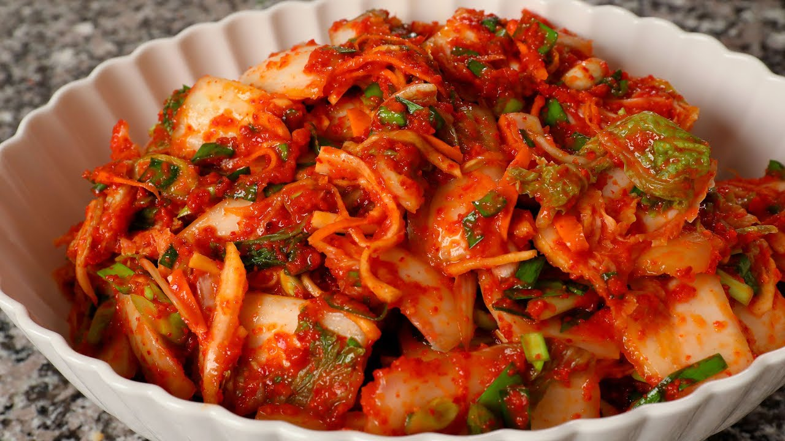
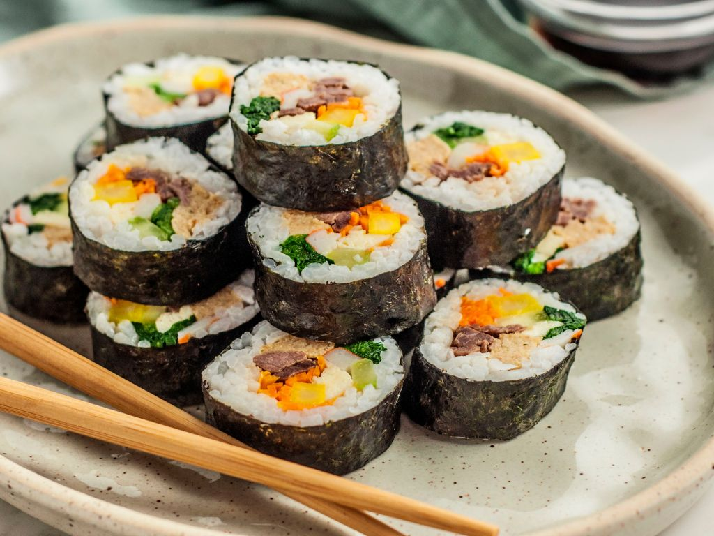
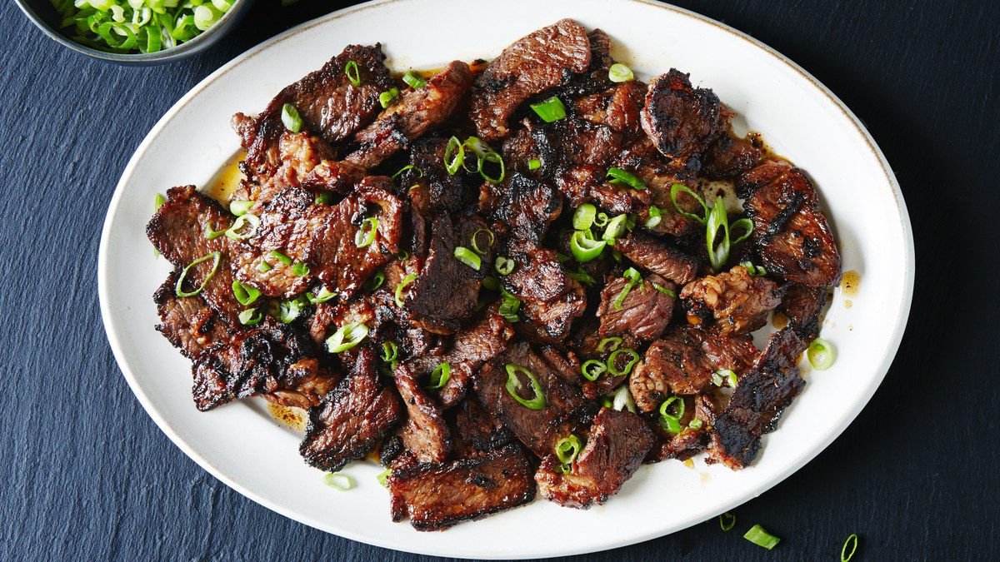
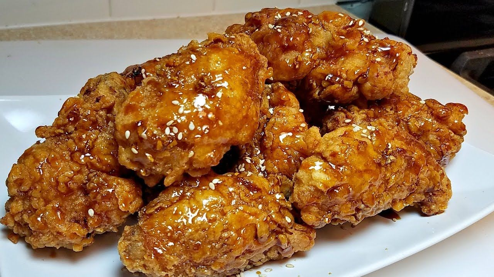
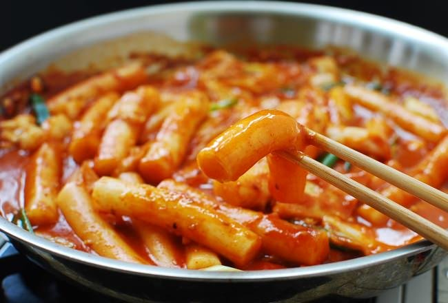

Kimchi adalah makanan tradisional Korea yang terbuat dari sayuran yang difermentasi, biasanya kubis atau lobak putih, yang dicampur dengan bumbu-bumbu seperti cabai, bawang putih, jahe, dan garam laut.
Kimbap-roll, atau yang juga dikenal sebagai kimbap, adalah makanan Korea yang terdiri dari nasi yang dilapisi dengan rumput laut (nori) dan diisi dengan berbagai bahan seperti sayuran, daging, atau seafood. Isiannya dapat beragam, termasuk telur dadar, wortel, lobak, rumput laut, dan daging panggang seperti ham atau daging sapi.
Bulgogi adalah masakan Korea yang terkenal, terdiri dari daging sapi (sering kali daging sapi sirloin atau tenderloin) yang dipotong tipis dan direndam dalam campuran bumbu, yang terdiri dari kecap asin, gula, bawang putih, wijen, dan bumbu-bumbu lainnya.
Crunchy fried chicken adalah hidangan ayam yang dimasak dengan teknik penggorengan khusus untuk menciptakan kulit yang renyah dan garing.
Tteokbokki adalah makanan Korea yang terbuat dari tteok (kue beras) yang dipotong menjadi bentuk silinder atau bulat dan direbus bersama dengan saus pedas yang kental.
